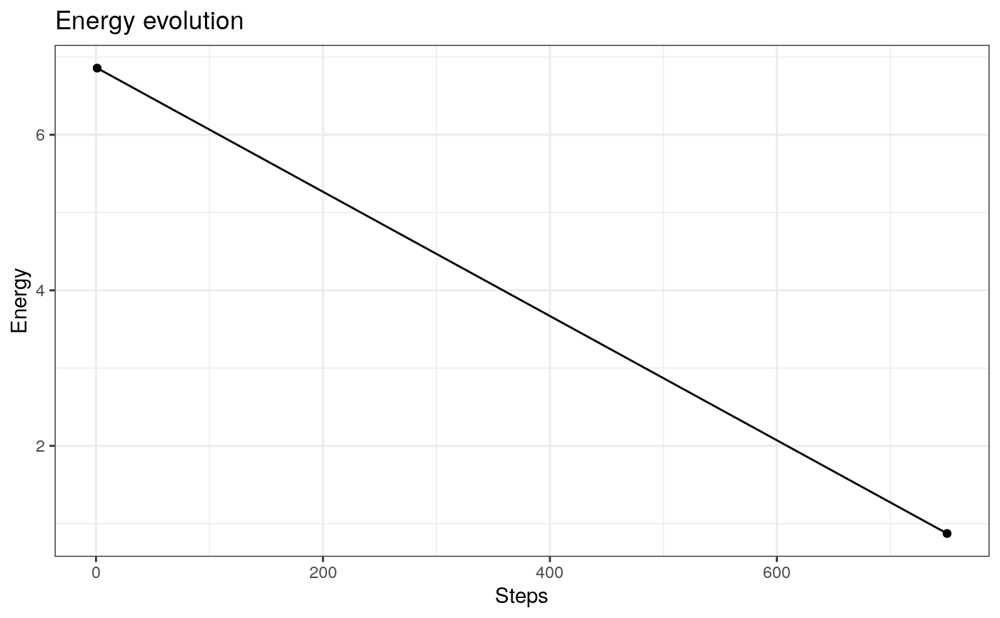
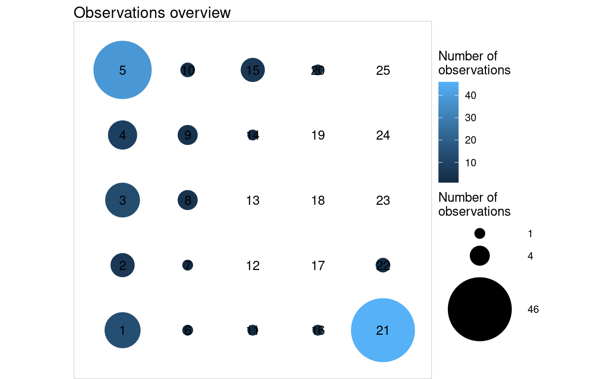
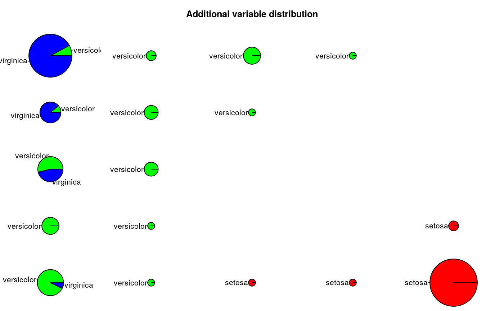
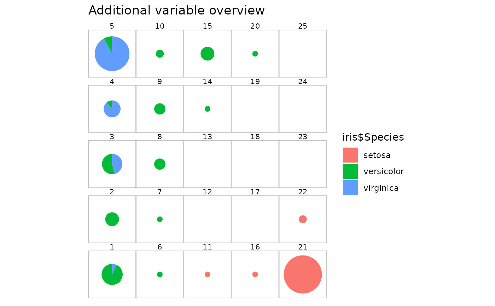

somRes resultssomRes.plotting.RdUseful details on how to produce graphics to help interpreting a somRes
object.
Important: the graphics availables for the different types of SOM are marked with a N, a K or a R.
(N = numerical SOM, K = korresp SOM and R = relational SOM).
what = "obs"For the cases what = "obs" and what = "add", if a neuron is empty,
nothing will be plotted at its location.
The possible values for type are:
"hitmap" (K, R)plots proportional areas according to the number of
observations per neuron. It is the default plot when what="obs".
"color" (N)can have one more argument, variable, the name or
index of the variable to be considered (default, 1, the first variable).
Neurons are filled using the given colors according to the average value level
of the observations for the chosen variable.
"lines" (N)plots a line for each observation in every neuron, between
variables. A vector of variables (names or indexes) can be provided with the
argument variable.
"meanline" (N)plots, for each neuron, the average value level of the
observations, with lines and points. One point represents a variable. By
default, all variables of the dataset used to train the algorithm are plotted
but a vector of variables (names or indexes) can be provided with the argument
variable.
"barplot" (N)is similar to "meanline" but using barplots. Then,
a bar represents a variable.
"boxplot" (N)plots boxplots for the observations in every neuron, by
variable. Like "lines", "meanline" and "barplot" a vector of variables (names
or indexes) can be provided with the argument variable.
"names" (N, K, R)prints on the grid the element names (i.e., the
row names or row and column names in the case of korresp) in the neuron
to which it belongs.
what = "energy" (N, K, R)This graphic is only available if some intermediate backups have been registered
(i.e., with the argument nb.save of trainSOM or initSOM
resulting in x$parameters$nb.save>1). Graphic plots the evolution of the
level of the energy according to the registered steps.
what = "prototypes"The possible values for type are:
"lines" (N, K, R)has the same behavior as the "lines" case
described in the observations section, but according to the prototypes level.
"barplot" (N, K, R)has the same behavior as the "barplot" case
described in the observations section, but according to the prototypes level.
"color" (N, K)has the same behavior as the "color" case
described in the observations section, but according to the prototypes level.
"3d" (N)case is similar to the "color" case, but in 3
dimensions, with x and y the coordinates of the grid and z the value of the
prototypes for the considered variable. This function can take two more
arguments: maxsize (default to 2) and minsize (default to
0.5) for the size of the points representing neurons.
"smooth.dist" (N, K, R)depicts the average distance between a prototypes and its neighbors on a map where x and y are the coordinates of the prototypes on the grid.
"poly.dist" (N, K, R)also represents the distances between prototypes but with polygons plotted for each neuron. The closest from the border the polygon point is, the closest the pairs of prototypes are. The color used for filling the polygon shows the number of observations in each neuron. A white polygon means that there is no observation. With the default colors, a red polygon means a high number of observations.
"umatrix" (N, K, R)is another way of plotting distances between
prototypes. The grid is plotted and filled with my.palette colors
according to the mean distance between the current neuron and the neighboring
neurons. With the default colors, red indicates proximity.
"mds" (N, K, R)plots the number of the neuron on a map according to a Multi Dimensional Scaling (MDS) projection on a two dimensional space.
"grid.dist" (N, K, R)plots on a 2 dimension map all distances. The number of points on this picture is equal to \(\frac{\textrm{number of neurons}\times(\textrm{number of neurons}-1)}{2}\). On the x axis corresponds to the prototype distances whereas the y axis depicts the grid distances.
what="add"The case what="add" considers an additional variable, which has to be
given to the argument variable. Its length must match the number of
observations in the original data.
When the algorithm's type is korresp, no graphic is available for
what = "add".
The possible values for type are:
"color" (N, R)has the same behavior as the "color" case
described in the observations section. Then, the additional variable must be a
numerical vector.
"lines" (N, R)has the same behavior as the "lines" case
described in the observations section. Then, the additional variable must be a
numerical matrix or a data frame.
"boxplot" (N, R)has the same behavior as the "boxplot" case
described in the observations section. Then, the additional variable must be
either a numeric vector or a numeric matrix/data frame.
"barplot" (N, R)has the same behavior as the "barplot" case
described in the observations section. Then, the additional variable must be
either a numeric vector or a numeric matrix/data frame.
"pie" (N)requires the argument variable to be a vector, which
will be passed to the function as.factor, and plots one pie for each
neuron according to this factor. By default, the size of the pie is
proportional to the number of observations affected to its neuron but this can
be changed with the argument proportional = FALSE.
"names" (N, R)has the same behavior as the "names" case
described in the observations section. Then, the names to be printed are the
elements of the variable given to the variable argument.
This case can take one more argument: size (default to 4) for the
size of the words.
"words" (N, R)needs the argument variable be a numeric matrix
or a data.frame: names of the columns will be used as words and the
values express the frequency of a given word in the observation. Then, for each
neuron of the grid, the words will be printed with sizes proportional to the sum
of their values in the neuron. If the variable given is a contingency
table, it will plot directly the frequency of the words in the neurons.
"graph" (N, R)requires that the argument variable is an
igraph object (see library("igraph"). According to the existing
edges in the graph and to the clustering obtained with the SOM algorithm, a
clustered graph will be produced where a vertex between two vertices represents
a neuron and the width of an edge is proportional to the number of edges in the
given graph between the vertices affected to the corresponding neurons.
The option can handle two more arguments: pie.graph and pie.variable.
These are used to display the vertex as pie charts. For this case,
pie.graph must be set to TRUE and a factor vector is supplied by
pie.variable.
Further arguments, their reference functions and the plot.somRes cases
are summarized in the following list:
plot.igraph is called by the cases:
what = "add" / type = "graph"
what = "add" / type = "projgraph" (for a superclass object)
persp is called by the case
what = "prototypes" / type = "3d"
ggplot is called in all the other cases.
In complement to ggplot,
geom_text_wordcloud is called by the cases:
type = "names"
what = "add" / type = "words"
geom_contour_fill is called by the case
what = "prototypes" / type = "smooth.dist"
### Numerical SOM # run the SOM algorithm on the numerical data of 'iris' data set iris.som <- trainSOM(x.data = iris[,1:4], nb.save = 2) ####### energy plot plot(iris.som, what = "energy") # energyif (FALSE) { plot(iris.som, what = "obs", type = "lines") plot(iris.som, what = "obs", type = "barplot") plot(iris.som, what = "obs", type = "boxplot") plot(iris.som, what = "obs", type = "meanline") plot(iris.som, what = "obs", type = "color", variable = 1) plot(iris.som, what = "obs", type = "names")} ####### plots on prototypes plot(iris.som, what = "prototypes", type = "3d", variable = "Sepal.Length")if (FALSE) { plot(iris.som, what = "prototypes", type = "lines") plot(iris.som, what = "prototypes", type = "barplot") plot(iris.som, what = "prototypes", type = "umatrix") plot(iris.som, what = "prototypes", type = "color", variable = "Petal.Length") plot(iris.som, what = "prototypes", type = "smooth.dist") plot(iris.som, what = "prototypes", type = "poly.dist") plot(iris.som, what = "prototypes", type = "grid.dist") plot(iris.som, what = "prototypes", type = "mds")} ####### plots on an additional variable: the flower species plot(iris.som, what = "add", type = "pie", variable = iris$Species)